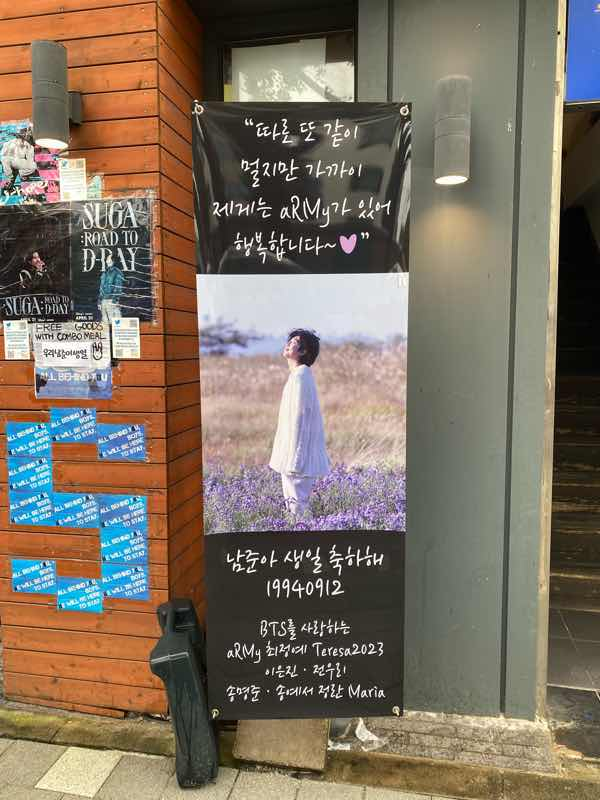
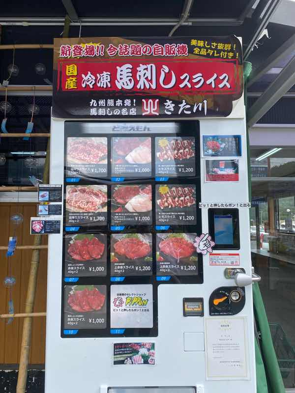
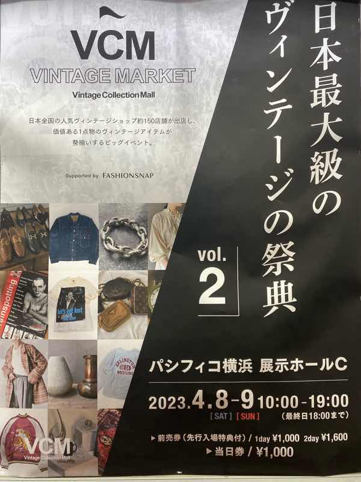

興味をひかれた広告
センイル広告
 撮影者：神林杏早
9月に韓国に行ったときに見た韓国アイドルの誕生日を祝う広告。韓国では、アイドルの誕生日に合わせてファンが広告などを作り、大々的にお祝いをする文化がある。
馬刺し自販機
 撮影者：神林杏早
8月に茨城の道の駅でみつけた馬刺しの自販機。普段はなかなか見かけない個性的な自販機。また出汁を売っている自販機など、飲料だけでない販売が自販機で行われている。
服の祭典のポスター
撮影者：神林杏早
3月にクイーンズスクエアの掲示板にあったヴィンテージの祭典の広告。どのようなものが展示されるのか分かりやすくするため、写真が複数枚使われている。